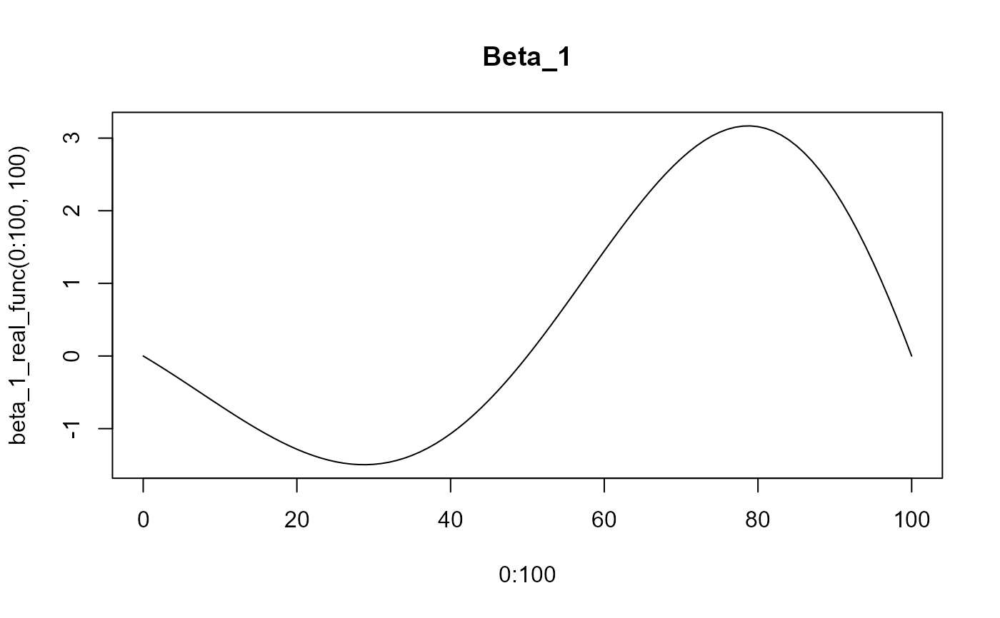

beta_1_real_func.Rdbeta_1_real_func
beta_1_real_func(t, end_time = 100, drop = NULL)a value
beta_1_real_func(0)
#> [1] 1.224606e-16
beta_1_real_func(10)
#> [1] -0.682909
beta_1_real_func(10:90)
#> [1] -6.829090e-01 -7.517735e-01 -8.195517e-01 -8.859236e-01 -9.505653e-01
#> [6] -1.013150e+00 -1.073351e+00 -1.130840e+00 -1.185291e+00 -1.236381e+00
#> [11] -1.283792e+00 -1.327210e+00 -1.366330e+00 -1.400856e+00 -1.430501e+00
#> [16] -1.454991e+00 -1.474066e+00 -1.487480e+00 -1.495003e+00 -1.496425e+00
#> [21] -1.491554e+00 -1.480217e+00 -1.462268e+00 -1.437580e+00 -1.406052e+00
#> [26] -1.367610e+00 -1.322206e+00 -1.269820e+00 -1.210462e+00 -1.144170e+00
#> [31] -1.071015e+00 -9.910956e-01 -9.045458e-01 -8.115298e-01 -7.122446e-01
#> [36] -6.069196e-01 -4.958169e-01 -3.792311e-01 -2.574888e-01 -1.309485e-01
#> [41] -5.184983e-16 1.349365e-01 2.734110e-01 4.149449e-01 5.590320e-01
#> [46] 7.051399e-01 8.527116e-01 1.001167e+00 1.149903e+00 1.298300e+00
#> [51] 1.445718e+00 1.591504e+00 1.734991e+00 1.875500e+00 2.012347e+00
#> [56] 2.144839e+00 2.272284e+00 2.393989e+00 2.509262e+00 2.617420e+00
#> [61] 2.717788e+00 2.809704e+00 2.892521e+00 2.965612e+00 3.028371e+00
#> [66] 3.080217e+00 3.120598e+00 3.148995e+00 3.164922e+00 3.167932e+00
#> [71] 3.157619e+00 3.133620e+00 3.095621e+00 3.043356e+00 2.976612e+00
#> [76] 2.895230e+00 2.799110e+00 2.688210e+00 2.562548e+00 2.422209e+00
#> [81] 2.267338e+00
plot(x=0:100, y=beta_1_real_func(0:100, 100), type='l', main="Beta_1")
